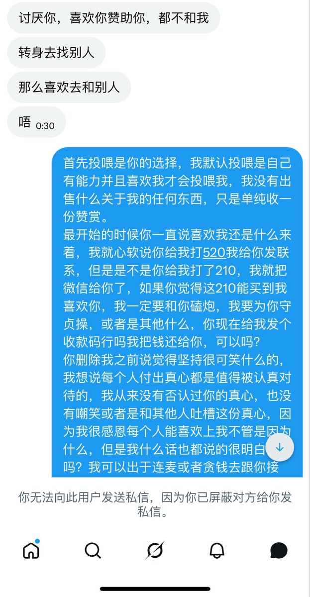
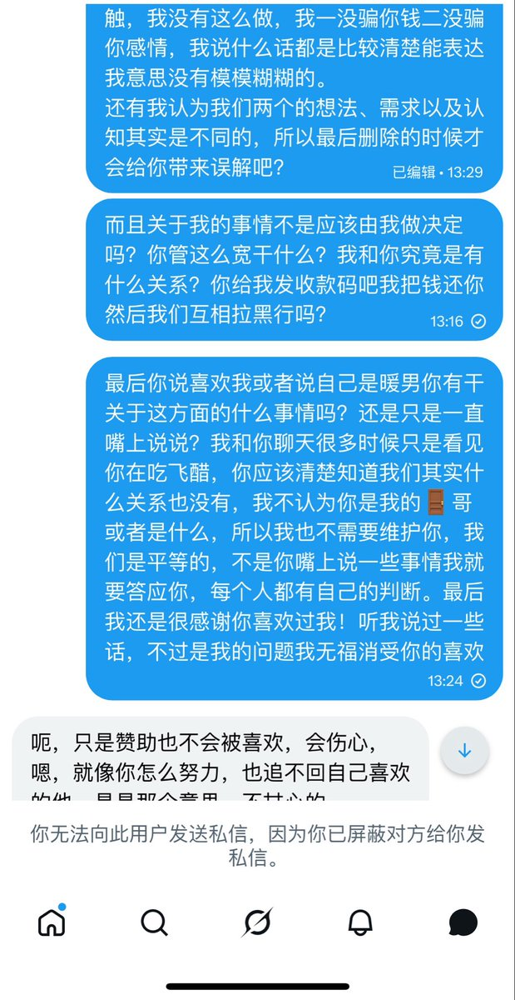
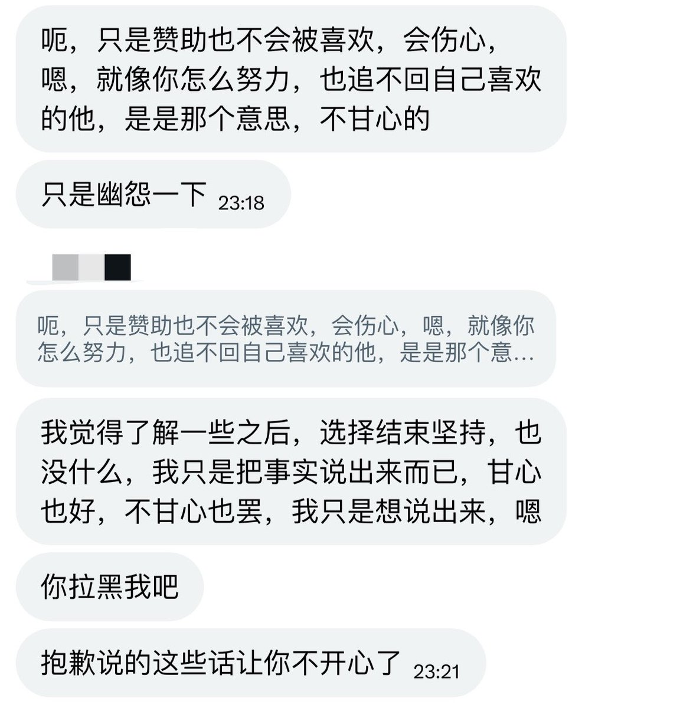

小由
@Xiaoyou_329
(´-ω-`)可能关于收钱给联系会有争议。但我想说对于我来说这确实是心软之举，因为我可能会要去和别人社交什么。这对我来说很苦恼。
而且我确实是因为看他一直坚持我才会给他一个机会。一个契机。不然我理都不会理的。



小由
@Xiaoyou_329
所有人给我投喂都清楚以下好不好。有能力并且喜欢我的再给我投喂。我不是出售关于我的任何你换不来我的任何。顶到头说可以买来我的开心。
最后我把钱已经还给他了。好吧。吃一堑长一智。我不会再心软乱给人联系方式了。 https://t.co/SwGRMGgvBK